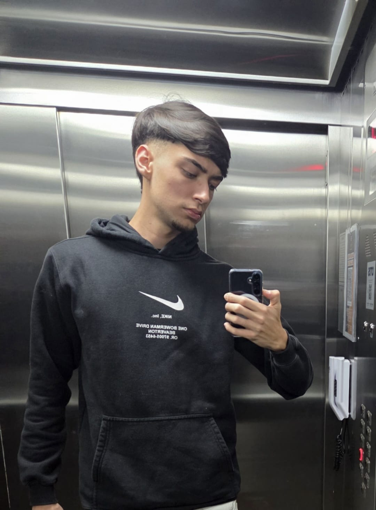
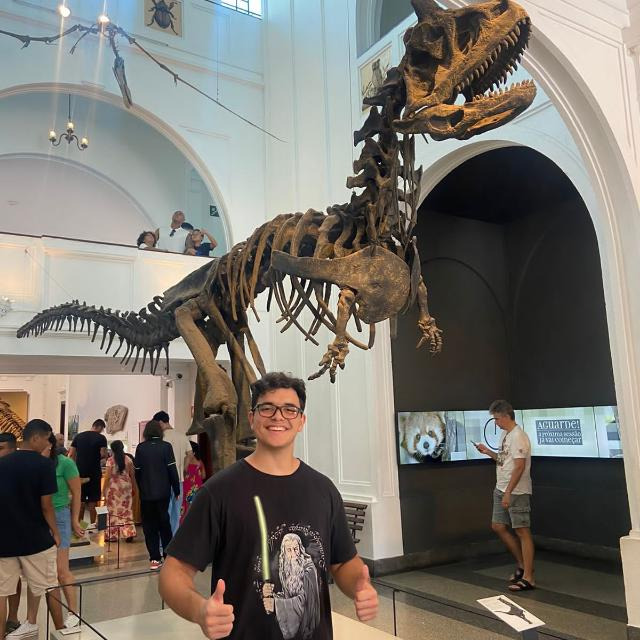

SOBRE NÓS
Somos um squad de 5 estagiários da Blip que acredita que tecnologia + criatividade é a receita perfeita pra criar o futuro.
Como parte do Bootcamp Fullstack IA da SoulCode temos a missão de criar um chatbot inteligente, integrado direto na página web e usando o Blip Studio demos vida à nossa querida Kor’AI :)
A gente acredita em aprender fazendo, quebrar a cabeça junto, rir, testar, errar, ajustar e construir algo que faça a diferença. No final, é sobre colocar a mão no código e dar vida a conversas que realmente funcionam.



Bruna Bassan · Caique Albertino · Erick Badaró · Angelo Finassi · Anna Machalous